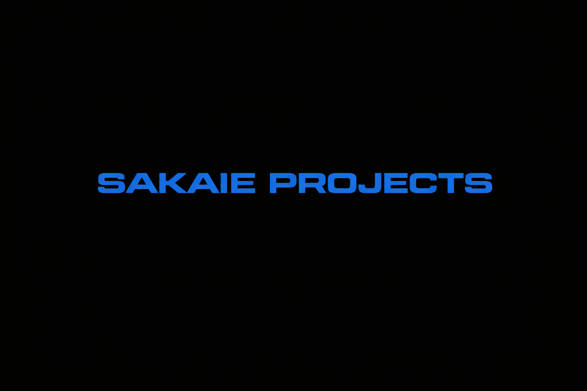

Home
|
About
|
Blog

My Attempts at Learning by Doing
Olin Rocketry
A project team I've contributed to
Stompy
An open-source humanoid robot
Pulsejet
Experiments in propulsion
Thorondor
An RC bicopter prototype
Machining
Cutting metal to make tools
Each project page includes design notes, assumptions, and failures where relevant.